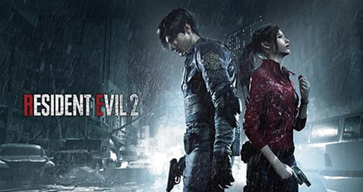
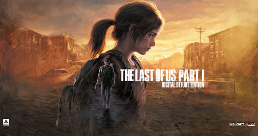
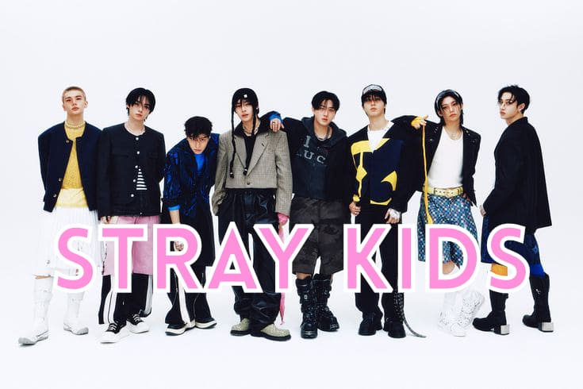
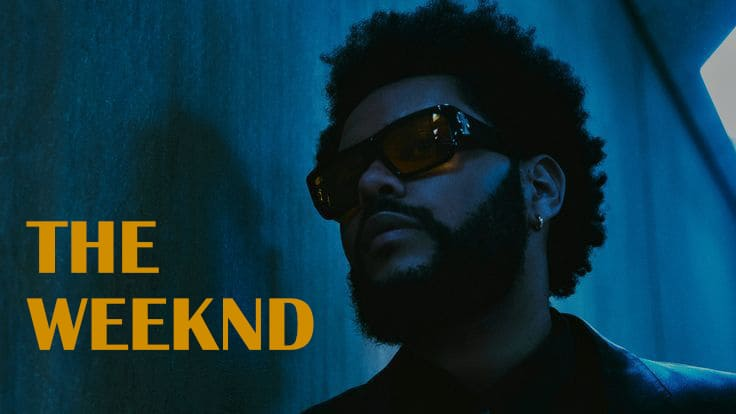
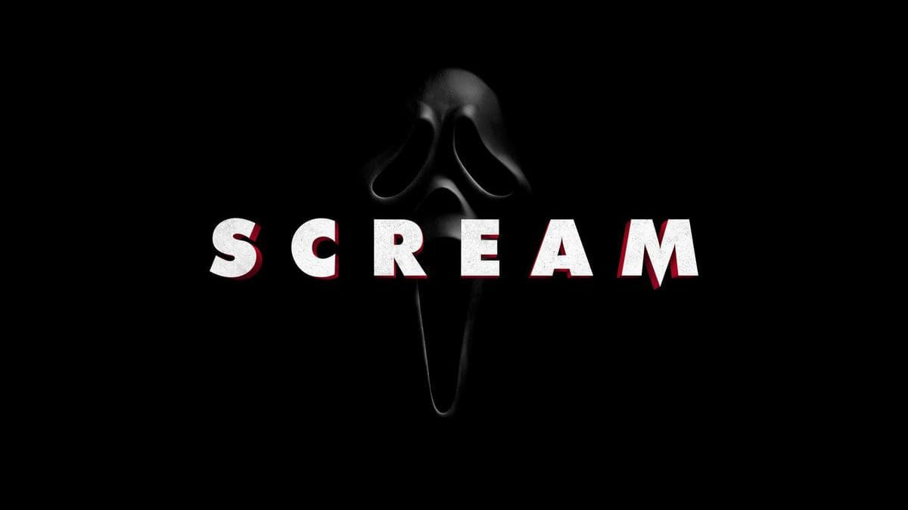
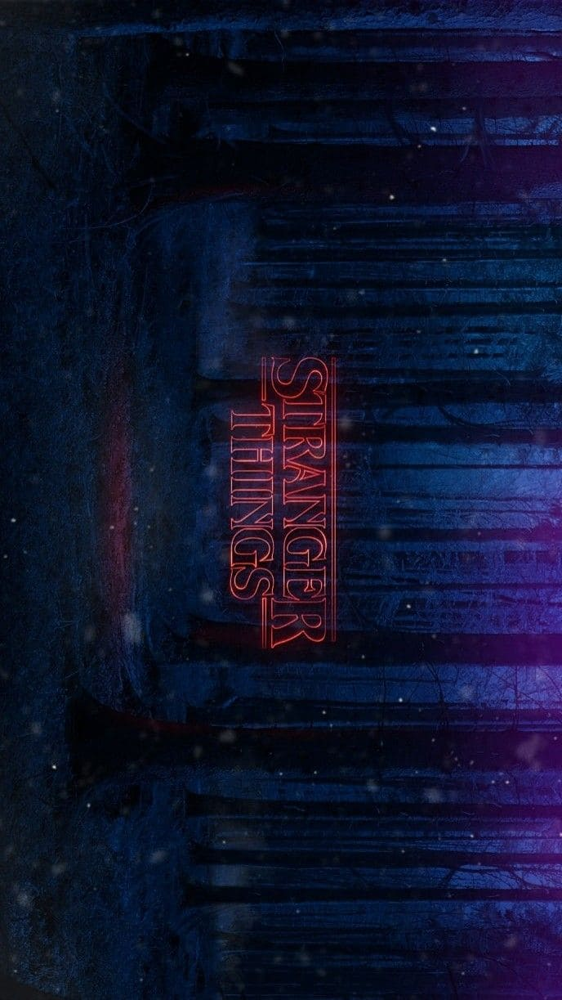
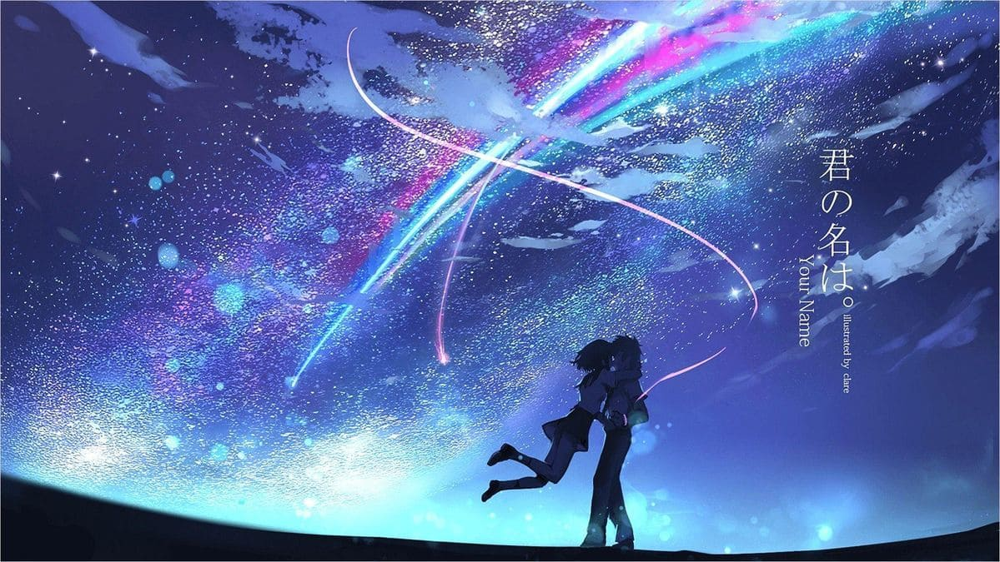
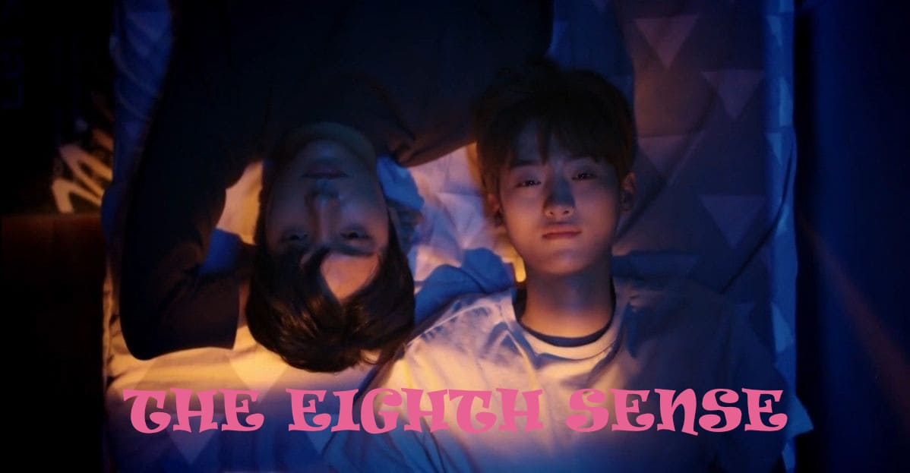
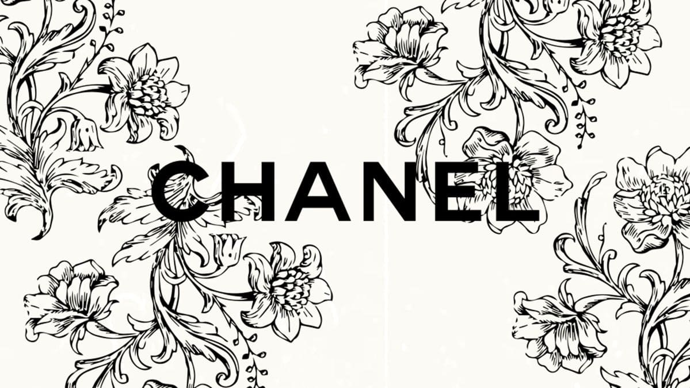

Je m’appelle Lucie, j’ai 19 ans et je suis actuellement en deuxième année de BUT MMI (métier du multimédia et de l’internet) à l’IUT de Lannion.
Passionnée de creation, de musique, jeux, mode et art, je suis quelqu’un qui aime construire des univers et les transporter à travers mes créations.









